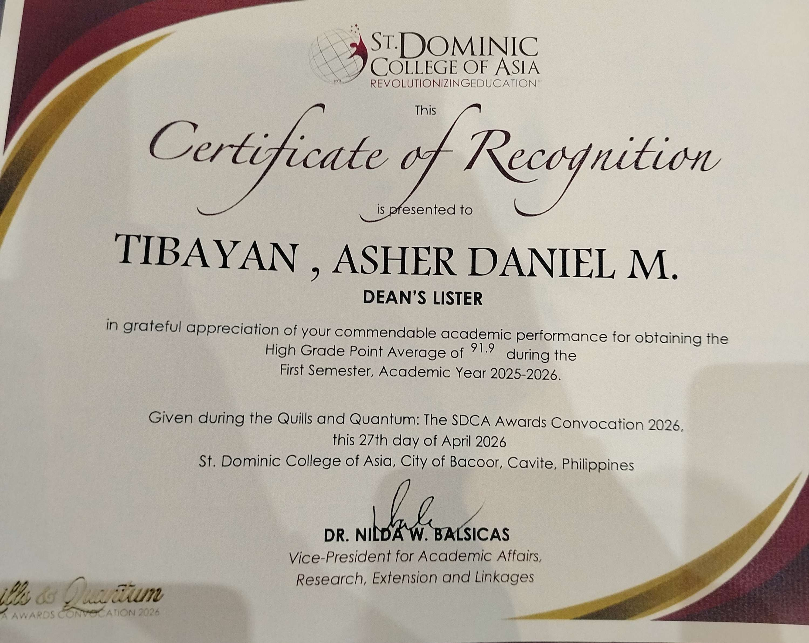
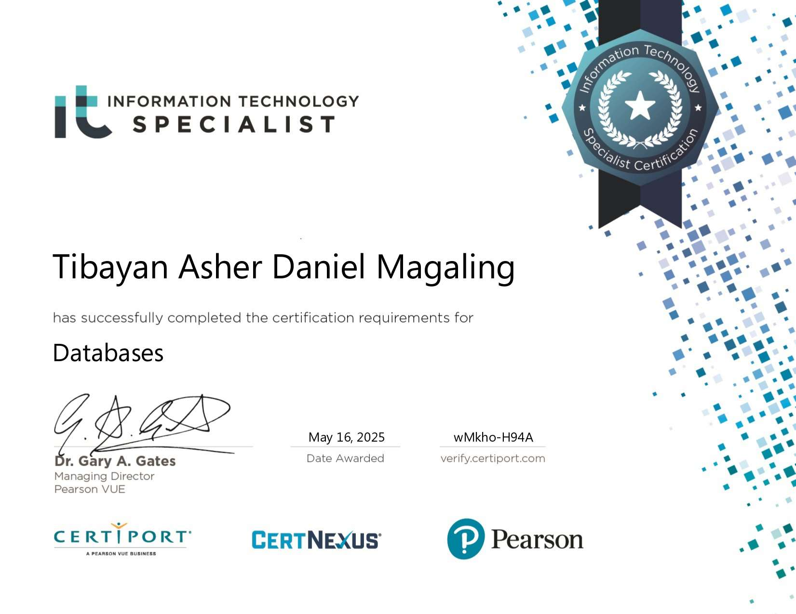
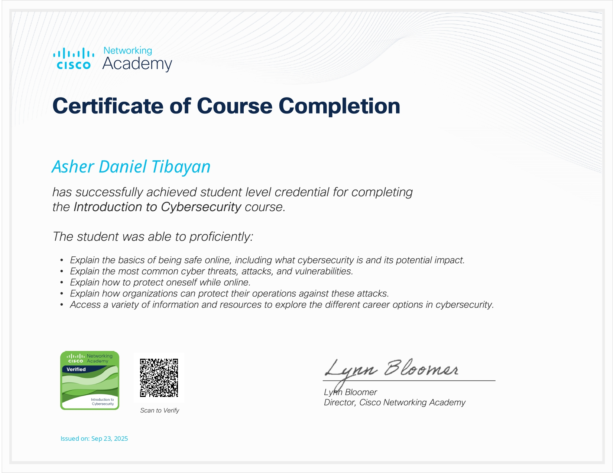
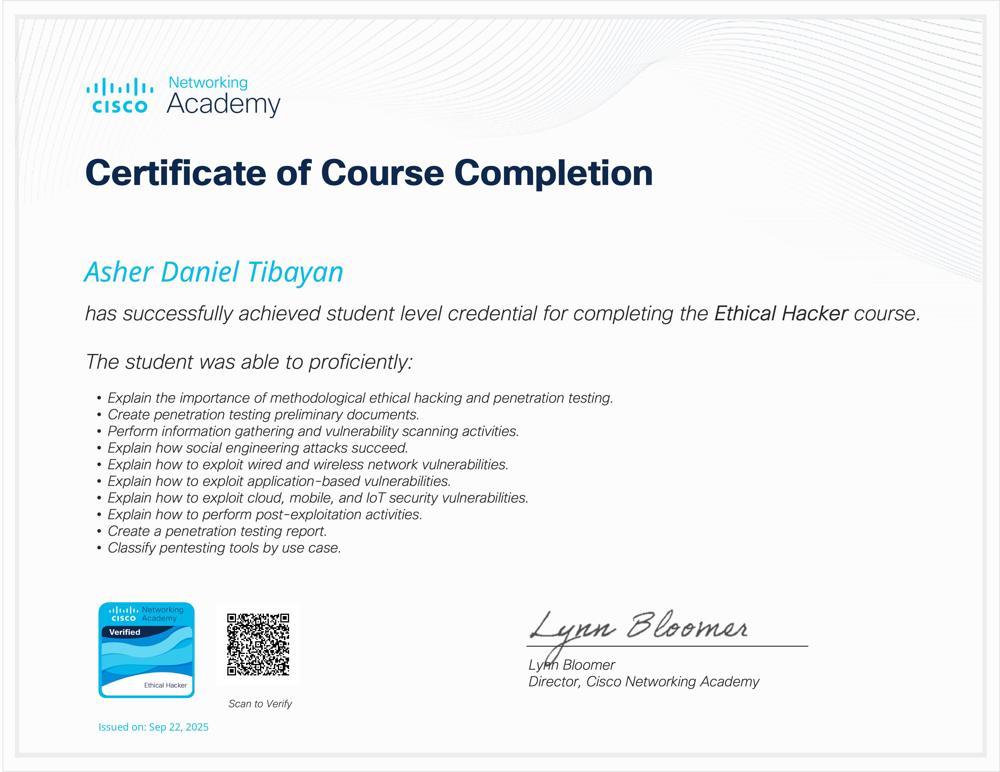
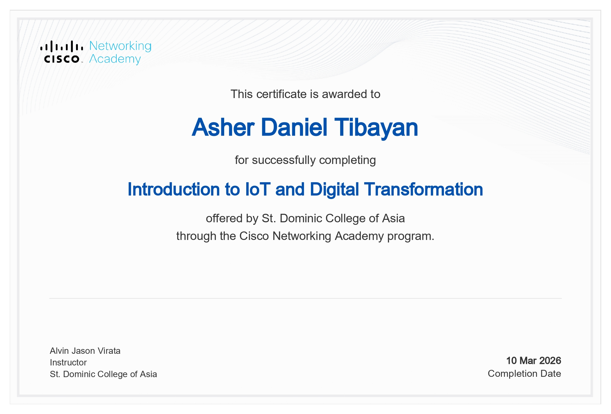

Bachelor of Science in Information Technology
St. Dominic College of Asia
4th Year BSIT · GWA: 1.5
PORTFOLIO
I’m Asher Daniel Tibayan, a BSIT student at St. Dominic College of Asia. This portfolio brings together my verified learning credentials and the projects and experiences that are shaping my path toward a career in technology.
Explore my progress01 · FOUNDATION
A snapshot of my academic path and the skills I’m continuing to develop.
St. Dominic College of Asia
4th Year BSIT · GWA: 1.5
FEU Institute of Technology · Completed first year
My earlier studies helped build a foundation in computing and software development.
Unida Christian Colleges · 2021–2023
Best in Research · With Honors
Unida Christian Colleges · 2017–2021
Best in TLE – Computer Servicing System · With Honors
Unida Christian Colleges · 2011–2017
With Honors
See my Tech Stack page for the full list.
02 · ACADEMIC RECOGNITION
Recognition for academic achievement at St. Dominic College of Asia.
St. Dominic College of Asia · GWA: 1.5
View certificate
03 · CONTINUOUS LEARNING
Credentials currently supported by certificate images in this portfolio.
View my Credly badgesPearson Certiport · earned May 16, 2025
View certificate
Course completion · issued September 23, 2025
View course certificate
Course completion · issued September 22, 2025
View course certificate
St. Dominic College of Asia · Cisco Networking Academy · completed March 10, 2026
View course certificate
04 · MAJOR PROJECT
An ongoing team project exploring smart medication adherence and predictive monitoring.
A smart pillbox concept combining medication reminders with predictive behavior analysis and family notifications to help reduce adherence risks.
My contribution
Hardware development, with additional work on code and documentation progress tracking.
Team
Asher Daniel M. Tibayan, John Carl E. Layosa, Vincent Ace C. Fronteras, and Kristine Mae B. Montajas.
05 · APPLIED LEARNING
Selected academic and personal projects combining software, hardware, and applied AI.
An IoT project focused on medication reminders and sensor-based monitoring of medication intake.
A student schedule tracking project.
As waste management becomes increasingly complex, this project aims to develop an AI-powered solution for automatic waste classification and proper segregation in smart trash bins.
My contribution: Backend and hardware development, including the waste-classification AI model and automatic segregation mechanism.
Technologies: Node.js, Firebase, MongoDB, TensorFlow, and Arduino.
Rx Box is a smart pillbox concept for medication adherence, predictive behavior analysis, and family notifications.
My contribution: Hardware development, plus code and documentation progress tracking.
Technologies: MongoDB, Random Forest, and Arduino.
06 · SERVICE & LEADERSHIP
Supported technical needs during the school's intramural activities.
View acceptance letter